Menu
- Projects using RRDtool
Gold Sponsors


RRDtool
RRD World
A whole ecosystem of tools have sprung up around rrdtool. From tiny add-ons to big applications or even replacements for rrdtool itself.
RRDtool Companions
drraw
Christophe Kalt | Date: 2002/11 | License: BSD
drraw is a simple web based presentation front-end for RRDtool that allows you to interactively build graphs of your own design. A
graph definition can be turned into a template which may be applied to many Round Robin Database files. drraw specializes in providing an easy mean
of displaying data stored with RRDtool and does not care about how the data is collected, making it a great complement to other RRDtool front-ends.
... [home]
DSreport
Steve Rader | Date: 2000/3 | License: GPL
DSreport pretty prints DS values from an RRDtool database in
tabular format. It supports flexable reporting time frames,
autoscaling DS values, and conversion factors.
... [home]
NHAWK (C# RRDTool Library for .Net and Mono)
Michael Corley <mwcorley79@XYZ-gmail.com> | Date: 2008/8 | License: GPL
RRD Merger
Ivan Pintori <ivan@XYZ-pintori.it> | Date: 2005/5 | License: GPL
RRD Merger is a perl script that merges 2 RRDs into a new one.
... [home]

WeatherMap4RRD
Alexandre Fontelle <afontelle@XYZ-free.fr> | Date: 2005/1 | License: GPL
Network Weathermap based on data from RRD files
... [home]

PHP Network Weathermap
Howard Jones <howie@XYZ-thingy.com> | Date: 2007/6 | License: GPL
Weathermap is a network visualisation tool, to take data you already have and show you an overview of your network in map form. Support is built in for RRD, and tab-delimited text files. Other sources are via plugins or external scripts. Includes nice Cacti integration with user authentication.
... [home] [demo]
rrdUtils
Javier Palacios <javierpb@XYZ-arsystel.com> | Date: 2005/4 | License: GPL
Is a set of tools intended to help the creation
and graphing
of RRD files. The RRD characteristics (data sources, consolidation
functions, ...) and the graphs are described in a configuration file that we
can use to create new instances of a RRD, and to generate the graphs for
them.
It includes an extension which uses the configuration files to poll an SNMP agent and stores the results in the related RRD. ... [home]
It includes an extension which uses the configuration files to poll an SNMP agent and stores the results in the related RRD. ... [home]
RRD4J
Sasa Marcovic, Mathias Bogaert <m.bogaert@XYZ-memenco.com> | Date: 2006/2 | License: LGPL
Rrd4j is a 100% pure java implementation of RRDTool.
... [home]
RRD Editor
Paul Smith <admin@XYZ-thetoolsmith.com> | Date: 2006/4 | License: GPL
The visual editing features of the RRD Editor allow you to
easily modify the contents of an RRD. Once
an RRD is loaded into the Editor you can quickly locate a specific data
point to modify or an entire Round Robin
Archive can be removed. The tool also allows new data sources and RRAs to
be added.
... [home] [demo]
RRDTool::Creator
Jacquelin Charbonnel | Date: 2007/6 | License: CeCILL-C
Perl module to simplify the creation of different kind of common RRD
... [home]
PyRRD
Duncan McGreggor | Date: 2004/8 | License: BSD
A Pure Python OO Wrapper for RRDTool
... [home]
Free Applications
akk@da
Piotr Kodzis <piotr.kodzis@XYZ-inteligo.pl> | Date: 2006/7 | License: GPL
System designed for middle size computer networks. Its purpose
is to quick detect system or network fault and to display information about its
for administrator. akk@da does not wait for information from any agents,
systems. Almost all services of the monitored hosts are discovered
automatically.
... [home]
Aware
Russell Leighton | Date: 2006/4 | License: LGPL
The *Aware* project is an effort to create a software framework
to measure, monitor, and control computer system resources. Aware is
intended to enable system administrators tune system variables, set
monitoring/security alarms and build adaptive distributed systems.
Aware modules may be linked into applications making them 'aware' and
able to participate in the larger managed system.
... [home]
BBStatus
Victor Tarhon-Onu <mituc@XYZ-ac.tuiasi.ro> | Date: 2003/2 | License: GPL
BBStatus is an IP accounting and a SNMP and IP monitoring tool for Linux
(for now). It uses RRDTool (RRDs PERL module) to display traffic statistics
and data gathered by SNMP. It also provides user based access, so each user
can log in and visualize various data (depending on access rights).
... [home]
Big Sister system and network monitor
Tom Aeby <aeby@XYZ-graeff.com> | Date: 2005/8 | License: GPL
Big Sister detects failing services and systems, displays live status
overviews and sends alerts. For providing diagnostic information to the
system administrator Big Sister also collects system performance data
and uses RRDTool as a powerful utility for storing and visualizing the
collected data.
... [home]
Cacti
Ian Berry <iberry@XYZ-raxnet.net> | Date: 2005/4 | License: GPL
Cacti is a complete network graphing solution designed to harness the power of RRDTool's data storage and graphing functionality. Cacti provides a fast poller, advanced graph templating, multiple data acquisition methods, and user management features out of the box. All of this is wrapped in an intuitive, easy to use interface that makes sense for LAN-sized installations up to complex networks with hundreds of devices.
... [home] [demo]
collectd
Florian Forster <collectd@XYZ-verplant.org> | Date: 2008/1 | License: GPLv2
collectd is a lighweight, modular daemon that collects system performance data.
It includes sophisticated networking possibilities, SNMP integration and well over 40 more plugins.
Multiple ways of extending it are available, including an embedded Perl interpreter and executing arbitary programs.
... [home]

Endian Firewall Community
Endian srl <info@XYZ-endian.it> | Date: 2006/12 | License: GPL
Endian Firewall Community is a "turn-key" linux security
distribution that turns every system into a full featured security
appliance. The software has been designed with "usability in mind" and
is very easy to install, use and manage, without losing its flexibility.
The features include a stateful packet inspection firewall,
application-level proxies for various protocols (HTTP, FTP, POP3, SMTP)
with antivirus support, virus and spamfiltering for email traffic (POP
and SMTP), content filtering of Web traffic and a "hassle free" VPN
solution (based on OpenVPN).
... [home]
eLuna Graph System
Stephane Dupont <steph@XYZ-eluna.org> | Date: 2006/4 | License: GPL

gbRRDGraphix
Olivier CRUILLES <linuxos@XYZ-club-internet.fr> | Date: 2008/9 | License: GPL v2
gbRRDGraphix is a graphical interface specialy to learn or use 'rrdtool' utilities easily
... [home]
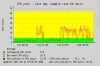
LPAR2RRD
Pavel Hampl <pavel.hampl@XYZ-cz.ibm.com> | Date: 2009/1 | License: GPL
LPAR CPU statistics and documentation tool for IBM Power
systems servers (pSeries & iSeries)
The tool is capable to produce historical CPU utilization graphs of LPARs
and shared CPU usage.
It also collects complete physical (HW) and logical configuration of all
managed systems and their lpars and all changes in their state and
configuration
... [home] [demo]
Mailgraph
David Schweikert <david@XYZ-schweikert.ch> | Date: 2005/6 | License: GPL
Monitorix
Jordi Sanfeliu <jordi@XYZ-fibranet.cat> | Date: 2005/9 | License: GPL
Monitorix is a lightweight monitoring tool designed to monitor as many services as it can. At this time, it monitors from the CPU load and temperatures to the users on the system. Network device activity, network service demand, kernel usage and even the devices' interrupt activity are also monitored. It uses RRDtool as its logging and graphing back-end. The current status of any corporate UNIX/Linux server with Monitorix installed can be accessed via a Web browser.
... [home] [demo]
mpltd : MP Log Traffic Daemon
Massimiliano Piccinini <maxpic(@XYZ-)libero.it> | Date: 2006/9 | License: free source
mplpd is a little sniffing daemon that logs statistics per type of service. The type of service is defined by a rules configuration.
... [home]
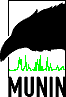
Munin
Ingvar Hagelund, Kjetil T. Homme, Patrick Domack, Mike
Discenza, Alexandre Dupouy, Nicolai Langfeldt, Mike Fedyk
<munin-users@XYZ-lists.sourceforge.net> | Date: 2005/11 | License: GPL v2
Munin is a tool for collecting performance data and
displaying it in a web interface. It has a master/node architecture. The
master collects data from the nodes at regular intervals, storing the
data in RRD, and updates the graphs. One of the main goals has been ease
of creating plugins.
... [home] [demo]
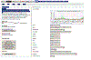
mysqlBind2/iDNS
Gary Wallis for Unixservice <supportDELME@XYZ-unixserviceDELME.com> | Date: 2008/11 | License: GPL
mysqlBind2 is a set of back-end, admin and end-user web
interfaces for managing critical telco quality internet DNS services.
Runs a simple single NS to very complex (views, hidden master, secondary
only, ASP features) multiple NS set server clusters. Current svn version
has optional dashboard and per zone rrdtool graphs and the needed rrd
named.stats data collection interface.
... [home] [demo]
N2RRD Nagios Add-On
Badri Prasad Pillai <badri@XYZ-diglinks.com> | Date: 2006/10 | License: GPL
NeDi
Remo Rickli | Date: 2010/2 | License: GPL
A pleasingly simple management application for common tasks in the day to day running of a computer network.
PHP based web GUI with Perl based collector and monitors. MySQL and RRD are used for data storage.
... [home]
NetMRG
Brady Alleman, Douglas E. Warner, Kevin Bonner <dev@XYZ-netmrg.net> | Date: 2006/1 | License: GPL
NMIS
Keith Sinclair, Eric Greenwood, Ivan Brunello, Jan van Keulen and the NMIS Development Team. | Date: 2006/3 | License: GPL
NMIS stands for Network Management Information System. It provides a platform
for fault and performance management of your network.
It supports many network products including Cisco, Microsoft, Sun , NET-SNMP
(Linux).
It provides thresholding, notification engine, summary network metrics, as
well reporting of MANY things.
There is an active NMIS community @ http://groups.yahoo.com/group/nmis_users/
... [home]
Observer NMS
Adam Armstrong <adama@XYZ-memetic.org> | Date: 2007/3 | License: BSD
Observer is an autodiscovering network management/monitoring system using rrdtool to draw graphs. Cisco network hardware can be automatically discovered based on CDP data collected via SNMP. It is also capable of automatically generating network infrastructure diagrams using Graphviz.
... [home] [demo]
Observium
Adam Armstrong <adama@XYZ-observium.org> | Date: 2010/7 | License: GPLv3
Observium has grown out of a lack of easy to use NMSes. It is intended to provide a more navigable interface to the health and performance of your network. Its design goals include collecting as much historical data about devices as possible, being completely autodiscovered with little or no manual intervention, and having a very intuitive interface.
... [home] [demo]
Oreon
Oreon is a network supervision software. It is based upon Nagios which is the most effective Open Source supervision and monitoring engine. The aim of this project is to offer a new frontend to Nagios, providing new functionalities through a modern and customisable interface for most users.
... [home]
Ourmon Networm Monitoring and Anomaly Detection System
Jim Binkley <jrb@XYZ-cs.pdx.edu> | Date: 2006/3 | License: BSD
Ourmon is a statistically oriented open-source network monitoring and
anomaly detection system. It may be regarded as an open source
equivalent of SNMP RMON II. It is based on promiscuous mode packet
collection on Ethernet (typically) interfaces. Ourmon does not collect
all the packets because one principle design goal is to extract signal
from noise, and not store all the noise in a giant bag under the
assumption that you can look at it "later" (there is no later).
Instead it attempts to find important data and summarize it. Data
is displayed on the web via pictures or reports. Features include
RRDTOOL graphs built from user-defined BPF expressions, topn flow
lists, topn ports, topn synning IP hosts, top UDP error makers, top
scanners, and IRC channels and hosts. Ourmon's anomaly detection
features include TCP and UDP anomalous hosts, IRC "evil" networks
(botnets) and a lovely graph that displays the number of remote and
local scanners. TCP data also includes information about P2P using
hosts, and soon will allow traffic classification via user-suppled
PCRE pattern tags.
... [home] [demo]
openSSI webView
Kilian CAVALOTTI | Date: 2004/11 | License: CeCILL
openSSI webView is a simple and easy-to-use openSSI cluster monitoring system. Its goal is to provide a quick overview of the cluster state, by graphing vital functions and graphically representing key figures. It allows the cluster administrator to keep an eye on the cluster health and usage rate, to quick view each node state and load, and to watch, and even migrate, users processes all accross the cluster.
... [home]
ozMonitor
OZOOD Solutions | Date: 2005/09 | License: Free ASP Mode
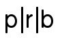
p|r|b php rrd browser
Guillaume Fontaine ** <prb.dev@XYZ-gmail.com> | Date: 2007/2 | License: GPL
A modular rrdtool utility for polling and graphing data.
It is written in php and stores configuration information in mysql.
The aim is to be highly flexible and make it possible to gather most
any kind of data and and graph it. The creation of RRA's, the polling
logic and the graph definitions are all defined in dedicated php
modules which can be added or customized at will. The poller and web
font-end both
use these modules.
... [home]
RRDBot
Nate Nielsen <rrdbot@XYZ-googlegroups.com> | Date: 2006/8 | License: BSD
RRDBot is an SNMP polling daemon which writes the polled values to an RRD database. It can poll many different SNMP sources in an efficient manner. RRDBot also contains tools to simplify the creation of RRD files, and the various archives contained in them.
... [home]
rrd.cgi
Haroon Rafique <haroon.rafique@XYZ-utoronto.ca> | Date: 2005/6 | License: GPL
rrd.cgi is an on-demand, highly configurable perl front-end
for rrdtool. It supports,
unlimited DEFs, CDEFs, hourly/daily/weekly/montly/yearly graphs,
auto-archival of graphs, historical graphs, displaying
source of RRDs::graph statements and autorefresh. rrd.cgi runs
under cgi-bin or mod_perl.
... [home] [demo]
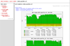
RRDstats
Dolly <dolly@XYZ-czi.cz> | Date: 2005/11 | License: GPL
RRDutil
Matt Simerson <info@XYZ-tnpi.biz> | Date: 2005/6 | License: BSD
Complete host monitoring tool for small
networks. Polls hosts via SNMP. Includes data collection scripts for
monitoring Apache, MySQL, and motherboard info. Monitors CPU load, memory,
disk space and activity, and network interfaces. Email
stats are provided via maillogs. Web hits via Logmonster.
... [home] [demo]
RRDWeather
Sébastien Wains | Date: 2005/9 | License: GPL
Serverstats
David Danier <david.danier@XYZ-team23.de> | Date: 2005/5 | License: GPL
System Data Recorder
Stefan Parvu <support@XYZ-systemdatarecorder.org> | Date: 2005/10 | License: GPL,CDDL,Apache
System Data Recorder is organized as two things: the
collection part which handles recording the data from each
system and a reporting side where we permanently store and generate
reports and perform the analysis. SDR is simple to use for
performance analysis, system sizing, and capacity planning.
... [home] [demo]
SICM - Simple Infrastructure Capacity Monitor
Thomas Price | Date: 2003/10 | License: GPL
SICM is a tool to monitor, graph and alert the capacity of computing devices and applications. SICM runs on a Windows or Linux device on your network, 24 hours every day and constantly records the capacity parameters of any networked device using snmp, ping or custom modules. The recorded data is stored for later reference via a user friendly menu-driven web browser. E-mail alerts are raised if a user determined number of queries fail.
... [home] [demo]
SmokePing
Tobias Oetiker and Niko Tyni <tobi@XYZ-oetiker.ch> | Date: 2005/9 | License: GPL
Latency monitor with built-in alerting system,
web interface and powerful plugin system for extensibility with new
type of latency probes and alerts.
... [home]
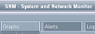
SNM - System and Network Monitor
Thomas Price | Date: 2006/5 | License: GPL
SNM is a tool to monitor, graph and alert system and network computing devices.
SNM runs on a Windows or Linux device on your network, 24 hours a day constantly recording the
parameters of the computing device using snmp, ping or custom modules. The recorded data is
stored for later reference via a user friendly menu-driven web browser. E-mail alerts are raised
if a user determined number of queries or thresholds fail.
... [home] [demo]
SnmpGraph
Antoine Guilmard | Date: 2005/5 | License: GPL
SnmpGraph permit to monitor the OIDs of SNMP protocol. You can also monitor all probe of
MotherBoardMonitor 5 (temperature, voltage). It automates the update of a RRD data base like does it the famous MRTG but does
not use Perl script. The installation can be done as a service in Windows.
... [home]
StatsDawg
Tim Soderstrom | Date: 2007/3 | License: GPL
Server status and tracking suite designed to be easy to install yet feature-rich. Based on
PHP, RRDTool, and the Smarty Template Engine.
... [home]
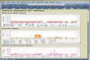
Systemgraph
Jochen Schlick | Date: 2006/2 | License: GPL
A nice graphical system statistics RRDtool frontend which produces hourly, daily, weekly, monthly ... graphs of various system data. At the moment it provides graphs for memory usage, cpu info, number of processes, number of open files, number of tcp connections, system load, network traffic, harddisk usage, ntpdrift, fan status and system temperatures.
... [home]
temperatures
Gürkan Sengün <sengun@XYZ-phys.ethz.ch> | Date: 2006/12 | License: GNU GPL
tinygraph
Ulrich Zehl | Date: 2005/7 | License: GPL
RRD Editor
Paul Smith <admin@XYZ-thetoolsmith.com> | Date: 2006/4 | License: GPL
The visual editing features of the RRD Editor allow you to
easily modify the contents of an RRD. Once
an RRD is loaded into the Editor you can quickly locate a specific data
point to modify or an entire Round Robin
Archive can be removed. The tool also allows new data sources and RRAs to
be added.
... [home] [demo]
Torrus
Stanislav Sinyagin <ssinyagin@XYZ-yahoo.com> | Date: 2005/6 | License: GPL
A robust and flexible framework for data collection and processing.
Includes a modular SNMP discovery engine, SNMP collector, threshold monitor,
hierarchical web interface.
... [home]
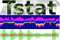
Tstat
Marco Mellia <mellia@XYZ-mail.tlc.polito.it> | Date: 2005/6 | License: GPL
Tstat provides information about classic
and novel performance indexes and statistical data
about Internet traffic.
It collects measurement indexes at both the
network (IP) layer and transport (TCP/UDP) layer.
Real time protocols (RTP/RTCP) are also analyzed,
allowing you to get statistical measurements on
VOIP traffic, for example.
Tstat analyzes either real-time captured packet
traces,
or previously recorded packet-level traces in various dump formats.
... [home] [demo]
Unnoc
Jason Schoonover <jason_jks@XYZ-yahoo.com> | Date: 2007/1 | License: GPL
Unnoc is an application that integrates RRDTool graphs with device monitoring. It will monitor and graph: CPU use, Memory, Load Average, Processes, Disk Usage, Network traffic and other misc items. Email alerts. Many supported devices (anything SNMP), including Cisco Aironets, APC and VMWare VI3.
... [home] [demo]
webminstats
Eric Gerbier <gerbier@XYZ-users.sourceforge.net> | Date: 2001/8 | License: GPL
Webminstats is a Webmin module designed to store system information in an rrdtool database and to display historic (hourly,
daily, weekly, monthly, and custom) graphs. It is modular in design, so as to be able to log everything from CPU usage to email box
size.
... [home]

YaketyStats
teamdowntime@yaketystats.org | Date: 2008/10 | License: GPL V2
YaketyStats gathers statistics about your *nix systems. It
is easy to install, maintain and extend and has has an intuitive,
AJAX-powered web interface for graphing data. Graphs are built on the
fly, can contain stats from multiple systems and include "Google
Maps"-like dragging.
... [home]
Zenoss Monitoring System
Erik A. Dahl <edahl@XYZ-zenoss.org> | Date: 2006/6 | License: GPL
Zenoss is an enterprise grade monitoring system that provides Inventory/Configuration, Event, Performance and Availability management in a single integrated package. It is written in Python using the Zope web application framework and Twisted network programming environment. All performance information is stored in RRD files. Zenoss is written to be easy to use for a beginner yet flexible and powerful enough for the advanced user.
... [home]
Zero RRD Framework
Boris Bukowski <b.bukowski@XYZ-gmx.de> | Date: 2009/4 | License: GPL v3
Zero is a light Framework around RRDTool, primary focused
on server monitoring. The agent collects system statistics and sends
them via HTTP to the central Server. There are plugins for logfile
processing, mysql, diskusage, java JMX, squid logs and apache status.
Zero is written in Perl.
... [home]
Commercial Applications
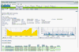
AirWave Management Platform
AirWave Wireless, Inc. <info@XYZ-airwave.com> | Date: 2005/7 | License: Commercial
The AirWave Management Platform™ (AMP) wireless network
management software gives you complete, centralized control over your
organization's Wi-Fi network infrastructure. AMP's web-based console
provides you a single point of intelligent control from which to
automatically monitor, analyze, and configure even complex, multi-vendor
wireless network infrastructures in real time. Whether you're responsible
for a small network in a single building or a global wireless network across
hundreds of locations worldwide, AMP gives you the tools to deliver the
performance and security your users demand.
... [home]
Eye-on Bandwidth
Prefixmaster <info@XYZ-prefixmaster.com> | Date: 2006/4 | License: Commercial
Eye-on Bandwidth is a bandwidth monitor designed for scalability, speed
and security. It can be used by non-technical staff and has different
user privilege levels. A public system is available for small business
to simply manage a few devices, and a on-site system is available for
enterprise/ISP.
... [home] [demo]
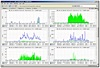
WANGuard Platform
Andrisoft <office@XYZ-andrisoft.com> | Date: 2008/2 | License: Commercial
WANGuard Platform relies on NetFlow or Port Mirroring / SPAN to provide in-depth network traffic analysis and DDoS detection and mitigation. It can be used to generate traffic graphs and traffic accounting reports per IP, per subnet, per IP Zone or per router interface / switch port.
... [home]

tacLOG / tacMON
terreActive AG <sales@XYZ-terreactive.ch> | Date: 2009/2 | License: proprietary
tacLOG is a tool for centralized log management (passive monitoring). It can be used for compliance, event generation, analysis and reporting. tacMON is the active counter part used for system and security monitoring. RRD-graphs are used to display the (active and passive) monitoring results.
... [home] [demo]
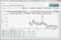
LoriotPro Extended Edition
LUTEUS <sales@XYZ-loriotpro.com> | Date: 2002/12 | License: Commercial
The LoriotPro software extended edition is an extensible
solution for administrators and managers that are involved in network
monitoring and system management tasks linked to the exploitation of
networks, systems or smart infrastructures. This free Windows based software
helps you to access snmp devices, to create IP network maps and directory
maps, manage IP routers,to analyze snmp requests,to perform snmp get and set
requests, to compile mib files, to browse mib tree, to receive events and
snmp trap, to discover networks and hosts. Included in LoriotPro , the RRD
Collector is a LoriotPro directory plugin used for data collection, RRD
databases feeding and RRD graph generation. RRD Collector can be seen as a
Windows Front End of RRD tool. RRD manager is a full Windows dialog box
based application and allows you to create and manage the RRD databases, the
RRD graphs and the reports. RRD Manager is not able to collect the data to
store in RRD database.
... [home] [demo]
Add your own tool to this list
If you have written a tool that you would like to see listed in this index, please send me a little xml file describing your tool. Below you find an example:
<rrdworld type="companion|application|?????"
icon="rumble.png" > <!-- Size 100x66 -->
<name> Name of the Product </name>
<author> Who Created it </author>
<description> A short description of the tool. 300 char max. </description>
<homepage> http://somesite.blabla.plac </homepage>
<year> 2005 </year><month> 4 </month> <!-- Entry creation date -->
<license> GPL </license>
<!-- Optional -->
<livesite> http://somesite.blabla.plac </livesite>
<email> max@example.com </email> <!-- Author contact -->
</rrdworld>
08/31/10 | Tobias Oetiker | OETIKER+PARTNER AG